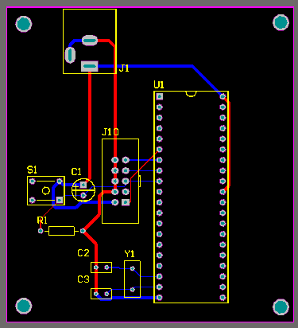
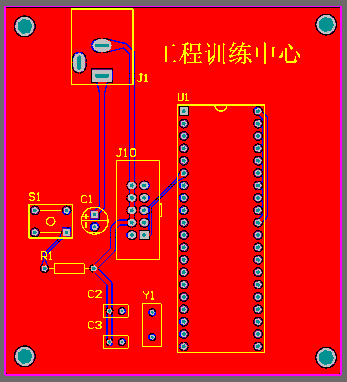
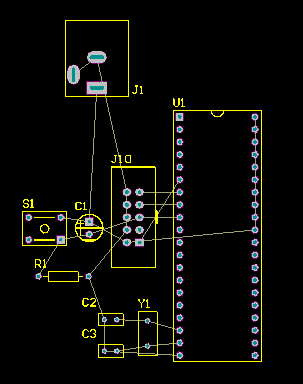

51最小系统PCB绘制
0.说明
PCB(Printed Circuit Board)，中文名称为印制电路板，又称印刷线路板，是重要的电子部件，是电子元器件的支撑体，是电子元器件电气连接的载体。由于它是采用电子印刷术制作的，故被称为“印刷”电路板。
通过绘制51系列单片机最小系统PCB图，进一步了解Altium Designer的使用方法和操作步骤。
1.准备
- 按《51最小系统原理图绘制》中的步骤，绘制好原理图。
- 查阅数据手册中关于封装的章节。如《AT89S51数据手册(DataSheet)》中，包装信息(Packaging Information)。
- 元件封装(Footprint)，就是指把硅片上的电路管脚，用导线接引到外部接头处，以便与其它器件连接·封装形式是指安装半导体集成电路芯片用的外壳。它不仅起着安装、固定、密封、保护芯片及增强电热性能等方面的作用，而且还通过芯片上的接点用导线连接到封装外壳的引脚上，这些引脚又通过印刷电路板上的导线与其他器件相连接，从而实现内部芯片与外部电路的连接。因为芯片必须与外界隔离，以防止空气中的杂质对芯片电路的腐蚀而造成电气性能下降。另一方面，封装后的芯片也更便于安装和运输。

2.基本概念
- 印制电路板制造，以减去法中的腐蚀铜箔法为主。
减去法：是利用化学品或机械将空白的电路板（即铺有完整一块的金属箔的电路板）上不需要的地方除去，余下的地方便是所需要的电路。 - 元器件封装工作层面
- 信号层：用来放置元件和布线。包括：顶层Top Layer/底层Bottom Layer等。
- 机械层：用于放置与电路板的机械特性有关的标注尺寸信息和定位孔。包括：Mechanical 13等。
- 阻焊层：其意义是反的。不包含该层的地方将覆盖阻焊(绿油)。包括：顶层Top Solder/底层Bottom Solder。
- 锡膏防护层：用来制作印刷锡膏的钢网。包括：顶层Top Paste/底层Bottom Paste。
- 丝印层：用于绘制元件的外形轮廓、文件标号和说明文字等。包括：顶层Top Overlay/底层Bottom Overlay。
- 禁止布线层：用于绘制印制板的边框等信息。包括：Keep-Out Layer。
- 常见元器件封装类型
- SIP：单列直插式封装，引脚中心距为2.54mm。
- DIP(Dual inline-pin Package)双列直插式封装，引脚中心距为2.54mm，应用广泛。
- 其他常用元器件的PCB封装。
- PCB设计中的常用尺寸单位：mil(密耳)，为英制单位，1mil=1/1000inch=0.0254mm。如管脚间距为100mil，即为2.54mm。
mil= mm
3.pcb封装设计
- 新建pcb库。PCB库，主要用来保存和编辑元器件PCB封装的尺寸和管脚位置。File--New--Library--PCB Library。
- 生成元器件封装。元器件PCB封装，可通过手动编辑生成。部分器件也可以使用向导生成。下面以51单片机的封装为例，进行示范。
- 手动编辑示范
- 放置焊盘位置，定义焊盘属性(推荐通孔直径0.9mm/35mil，焊盘大小为65mil)。
- 在丝印层标记单片机的尺寸，和半圆形缺口位置。
- 在右键--工具--元件属性对话框里，修改名称为"DIP40"。
- 保存PCB库文件。
- 向导生成示范
- 使用元器件向导。Tools--Component Wizard...--Next--选择”Dual In-line Packages(DIP)”--Next--修改过孔大小为35mil--Next--Next--Next--修改焊盘数为40--Next--Next--Finish。我们一般选购的DIP40的单片机的封装，即绘制完成。
- 保存PCB库文件。
- 添加原理图内其他元器件的pcb封装。
第1个焊盘，一般会特殊标记。如:第1个引脚，使用方形焊盘,其他引脚用圆形焊盘;也可以在丝印层使用小圆点标记第1个引脚。
编辑好的DIP40的元器件封装参考如下：

4.pcb文件设计
- 修改和设置原理图文件中相应元件的封装。以51单片机为例：
- 在工程中，新建PCB文件，并保存。
- 更新PCB文件。然后在原理图文件的主菜单中，选择"设计--Update PCB Document xxx.PcbDoc"菜单，选择更改，然后点击"生效更改"，"执行更改"按钮，更新PCB文件。
- 修改元件封装；并在PCB文件中，进行元器件布局。让后续的布线更合理简便。
- 设计板子形状
- 在Keep-Out Layer层，绘制一个闭合的区域边框。
- 按住Shift键，选中该区域边框，在菜单"设计--板子形状--按照选择对象定义"。
- 布线可以使用手工布线或自动布线。
- 手工布线:使用Interactively Route Connections在和层绘制导线。
- 自动布线:使用菜单"自动布线--全部(A)...--编辑规则--Routing--Width"，设置线宽，按"确定--Route All"按钮自动布线。
- 定位孔。在PCB四个角处，放置定位孔，定位孔直径推荐3.2mm。可以选用焊盘或Keep-Out Layer层剪切2种方式。
- 焊盘方式
- Keep-Out Layer层剪切方式
- 泪滴：泪滴是焊盘与导线或者是导线与导孔之间的滴装连接过度。可使走线与元件焊盘之间的连接平稳过渡，解决了焊盘与走线之间的连接容易断裂的问题。
- 当前的pcb状态，参考如图。 
- 铺铜：敷铜的意义在于，减小地线阻抗，提高抗干扰能力。顶层TopLayer和底层BottomLayer都需铺铜。
- 增加说明。丝印层：增加组号、项目名称、版本号等。
- 绘制完成的PCB图，参考如图。 
- 在投板前，需全面检查下原理图和pcb图。
- 设计完成后，可将相关设计图转换成PDF文档，方便其他同学调试时，参考查阅。
注意：有些器件的默认封装，不是我们选用的器件，需进行修改。PCB图中的器件封装要与实际使用的器件的封装一致，以及管脚的定义和其焊盘位置一致。以免制板回来后，焊接出错。
区域大小应尽量控制在100mm*100mm以内。


注意：绘图工具“走线(L)”，只是几何线段(Line)，不是真正的电线路(Wire)，没有电气特性。
推荐线宽：
信号线：10mil，电源线：30mil。
信号线：10mil，电源线：30mil。
警告：必须先完成板子形状的设计，才能进行自动布线，否则Altium Designer软件会崩溃。

注意：若为中文字符，需要设置字体为：TrueType，字体名为：宋体。
| 序号 | 检查项 | 检查重点 | 结果 |
|---|---|---|---|
| 0 | 系统模块汇总 | 检查是否满足系统功能要求 | |
| 1 | 最小系统(晶振) | 摆放位置是否合理 | |
| 2 | 最小系统(复位) | RST是否接触可靠，四脚开关是否接错 | |
| 3 | 最小系统(电源) | 是否有电源输入端子 | |
| 4 | 下载电路 | 根据芯片选择合适的下载接口 | |
| 5 | IO口 | P0口如用到，建议接上拉电阻 | |
| 6 | 器件 | 布局是否合理，是否有遗漏 | |
| 7 | 走线 | 电源线的线宽；避免90度走线 | |
| 8 | 泪滴 | ||
| 9 | 铺铜 | ||
| 10 | 定位孔 | ||
| 11 | 丝印 | 建议写上项目名称等信息 | |
| 12 | 板子大小 | 控制在100mm*100mm内 |